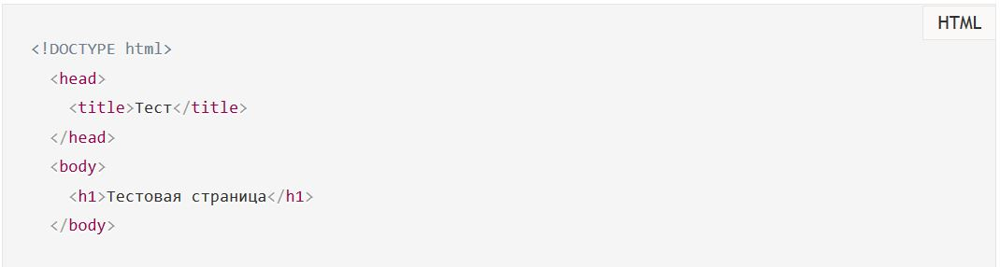
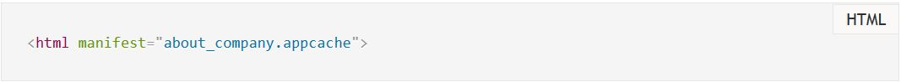
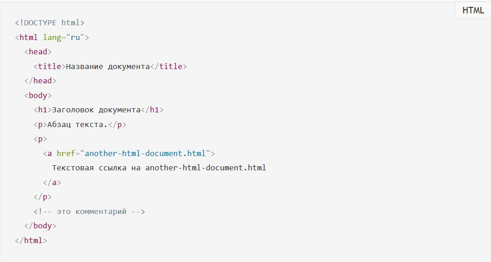

1.11.1. Элемент документа
Опубликовано: 20 февраля 2020 Обновлено: 16 марта 2020

Элемент <html>
Категории содержимого: нет.
Контекст, в котором этот элемент может быть использован: как корневой элемент HTML-документа. Везде, где разрешен фрагмент поддокумента в составном документе, например, внутри <iframe>.
Пропуск тегов: начальный тег <html> может быть пропущен, если сразу за тегом не идет комментарий. Закрывающий тег </html> также может быть пропущен, если перед ним нет комментария.
Для элемента доступны глобальные атрибуты и атрибут manifest, который указывает путь к документу кэша манифеста (в нем перечисляются ресурсы, которые должны быть сохранены в локальном кэше), например:
Элемент <html> представляет корень HTML-документа (элемент верхнего уровня). Рекомендуется указывать атрибут lang с указанием языка документа. Это помогает инструментам синтеза речи для определения произношения, инструментам перевода для определения правил перевода и т.д.
Все остальные элементы должны быть потомками элемента <html>. Все, что находится за пределами <html>...</html>, не воспринимается браузером как HTML-код и никак им не обрабатывается.
Базовый HTML-документ выглядит так:
Над тегом <html> в самом начале каждого документа указывается тип документа, который объясняет, какой тип HTML следует ожидать и, следовательно, какие спецификации валидаторов (например, валидатор HTML W3C) должны проверять данный документ.
Тип документа также служит для того, чтобы браузер отображал страницу в так называемом «стандартном режиме». В стандартном режиме браузеры обычно пытаются отобразить страницу в соответствии со спецификациями CSS, то есть предполагается, что документ создан с учетом веб-стандартов.
По материалам The document element